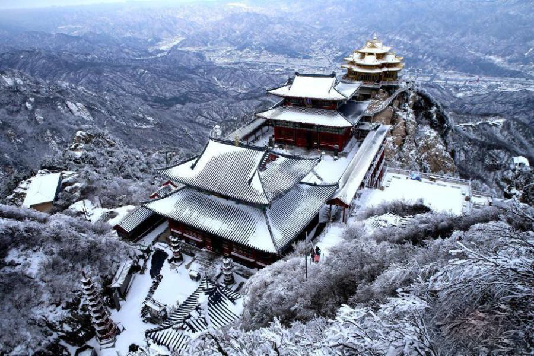
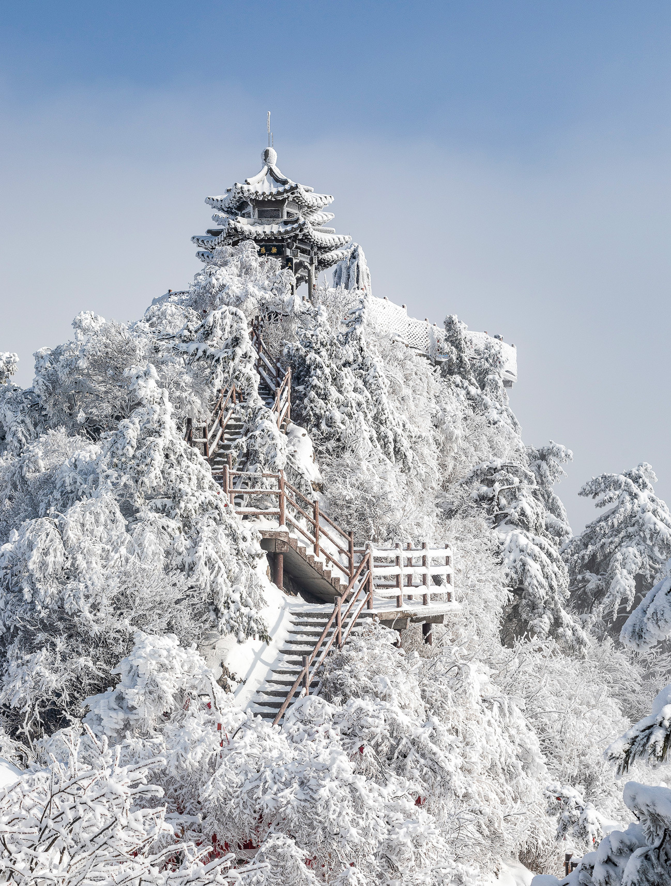
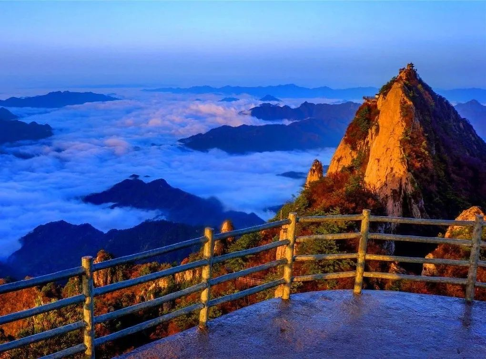
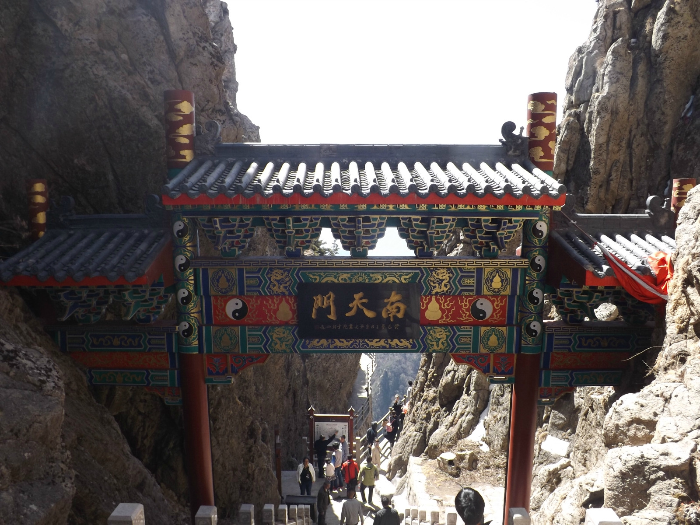

老君山（The Laojun Mountain），“天下无双圣境，世界第一仙山”。原名景室山，位于十三朝古都洛阳的栾川县县城东南三千米处。八百里伏牛山脉的主峰，玉皇顶海拔2217米。距今已有两千多年人文历史，是道教中历史最长的山脉。
春秋时期，被公认为道教始祖的老子李耳到此归隐修炼，使之成为“道源”和“祖庭”。北魏始于其上建老君庙以纪念。贞观十一年（637年），唐太宗重修景室山铁顶老君庙，赐名“老君山”，成为道教主流全真派圣地。万历三十一年（1603年），明神宗诏谕老君山为“天下名山”，并发帑金建殿，成为历史上唯一被皇封为“天下名山”的中国山脉。
老君山景观区6处、有景点179个，太清宫、十方院、灵官殿、淋醋殿、牧羊圈、救苦殿、传经楼、观音殿、三清殿、老君庙等庙宇16处。马鬃岭南侧有三千余亩石林景观对游人开放，被地质学者称为“北国石林”。
老君山现为世界地质公园、国家AAAAA级旅游景区、国家地质公园、国家级自然保护区、省级重点文物保护单位、省级风景名胜区，中国北方道教信众拜谒圣地，中原山水文化杰出代表。
2014年，老君山老子铜像被世界基尼斯总部输录为 “大世界基尼斯之最——世界最高的老子铜像”。亦是当代仙侠影视剧热门取景地，《诛仙·青云志》《天乩之天帝传说》等皆曾于此取景。



